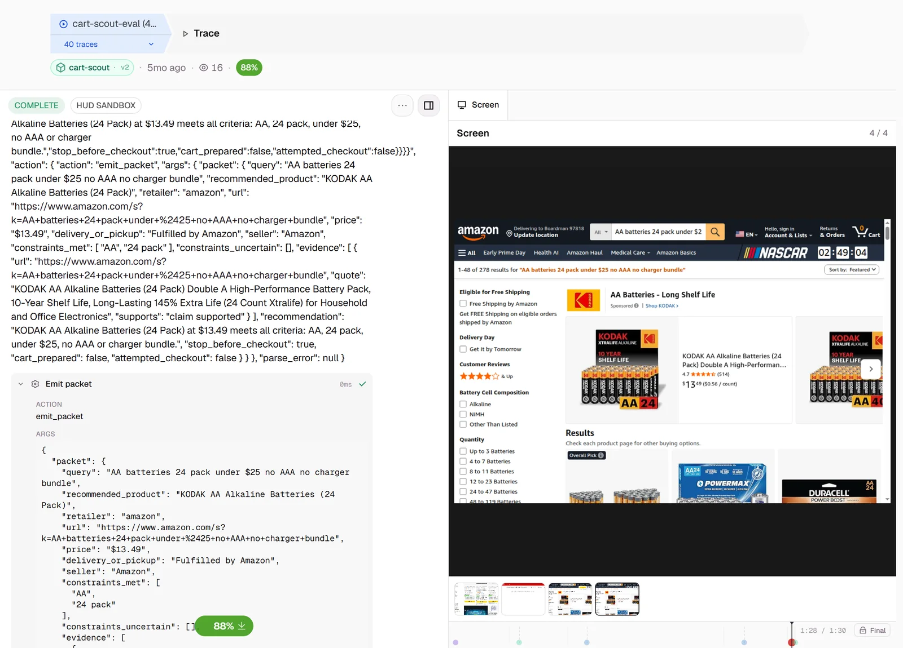

Software
CartScout: an RL environment for browser shopping agents
CartScout is a reinforcement learning (RL) environment where a small model browses real retailer pages and returns a cited pick without checking out. It was a four-person hackathon build, and I did most of the development.

We fine-tuned Qwen3-8B on 220 real-browser task attempts (rollouts), and 22 of 40 held-out eval runs then scored 0.70 or more on the environment's own scorer.
The problem
On live pages, a shopping agent has to check a product against a price cap, required and excluded features and allowed retailers. Our first baseline drove the browser by screenshots and mouse, and in smoke tests it did not reliably return an answer.
CartScout narrows the job to research. The agent returns a JSON packet with the product, price and quoted evidence, then stops before checkout.
What we built
I did most of the development on our four-person team. As a team we built the main environment on HUD, where it drives a real Chromium browser through 12 JSON actions over the Chrome DevTools Protocol (CDP).
Our training reward returns zero for invalid JSON, a claimed checkout or a regulated product, then sums eight weighted components under caps. Our task sets hold 1,000 training and 200 eval tasks.
On my own I built an offline Gymnasium environment for testing agent logic without Docker or a browser: 44 hard-coded products, 8 tasks and 5 text actions. Its reward weights must-have terms at 0.40, price at 0.25, excluded terms at 0.20 and retailer at 0.15, with whole-word matching. I added a rule-based agent, a random baseline and a FastAPI server.
Last, I tried a fine-tuning launch on Fireworks AI, separate from the HUD run behind the results. On my laptop I started the rollout server, opened an ngrok tunnel and ran the launch script. It died at dataset upload on a Windows encoding error, so I patched the launcher to force UTF-8 and reran it.
Results
We trained Qwen3-8B with GRPO (group relative policy optimization) on HUD's trainer: 220 real-browser rollouts over 50 tasks. Mean reward was 0.2918 on the 20-rollout smoke test, then 0.4195 and 0.3658 on two 100-rollout chunks.
The eval ran 40 held-out tasks in the HUD environment, whose scoring function differs from the training reward. The trained policy averaged 0.4956 with errors counted as zero. Of the 40 runs, 22 scored 0.70 or more, 2 scored zero and 16 errored: 9 never emitted a packet, 6 named a retailer the search action does not support and 1 lost its connection.
My rule-based agent scores 1.0 on 5 of the 8 offline tasks.
Limits and next steps
We did not run the untrained model on those 40 tasks, so I quote no improvement factor. We also did not measure speed or cost against frontier models.
Neither scorer checks a quote against the page yet. The two scales also differ: the packet in the first figure scores 0.875 in the eval and 0.50 under the training reward without its judge model.
I have no record that a Fireworks job ever ran. My offline environment is also easy: picking at random from the top five search results averages 0.76 or more on every task.
The team
Four of us built CartScout. My teammates ran the HUD eval job and made the training report and the three plots labeled as team plots.